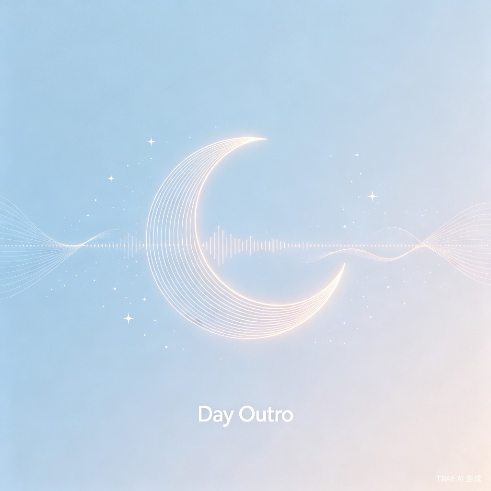

把今天讲完，然后安心入睡
研究表明，睡前主动表达能帮助大脑对当日信息进行编码和归档，从而减少"思维反刍"——即躺在床上反复回想当天细节的焦虑状态。
然而现有的产品无法满足这个需求：睡眠监测类 App 偏重数据分析，缺乏情感表达空间；社交/聊天类产品又太重，不适合睡前场景；写日记门槛高，难以坚持。城市独居人群缺的不是入睡的手段，而是一个让大脑确认「今天结束了」的仪式。
创始人在独居期间发现，睡前把今天发生的事口头讲一遍后，入睡速度明显加快。进一步调研发现，大量城市独居者有类似的隐性需求——他们不缺安眠药、不缺白噪音，缺的是一个允许他们对自己说话、且不被评判的空间。
灵感来源于音乐专辑中的 "Outro"（收尾曲）。每一张专辑都有一首 Outro 来完整落幕，每一天也应该如此。产品不使用虚拟 IP 形象，不设 AI 对话——因为用户真正需要的不是陪伴，而是自我表达的通道。
用户睡前打开 App，通过 1-5 分钟的语音或文字表达今日见闻与感受，随后记录就寝时间即可完成当天的 Outro。产品不分析内容、不提供 AI 回复、不进行社交分享——所有数据仅存本地。
配套温和的连续记录系统（不因中断重置 streak），辅以睡前故事朗读和睡眠打卡功能，用最轻量的交互，帮助用户养成「每日收尾」的睡前仪式。
我们不是在帮你记录睡眠，
我们是在帮你学会如何结束一天。
核心用户是 22-35 岁的城市独居年轻人。典型画像包括：在大城市独自租房工作的白领、远离家乡的留学生、因工作调动独自居住的新市民。他们每天面对大量信息输入，但缺少自然的口头表达出口——白天在职场保持礼貌，晚上回到空无一人的房间，无人可以对话。
每天睡前 10-15 分钟，用户已完成洗漱、躺在床上准备入睡，但大脑仍在活跃状态。此时打开 Day Outro，用 1-5 分钟说说今天发生了什么——可能是一天的复盘、一件小事的感触、或者只是念念叨叨的碎碎念。说完后打卡标记就寝，作为一天的正式结束。
中国独居人口已超过 1.25 亿[1]，其中大量是 20-35 岁的城市年轻人。他们在物理空间上独处，在心理空间上也缺乏安全、低门槛的表达出口。Day Outro 提供了这个出口——不需要 AI 回应、不需要社交点赞，仅仅是"对自己说话"这个动作本身，就具有情绪调节和心理收尾的功能。
研究表明，主动叙事（主动讲述自己的经历）比被动反思（独自思考）更能降低负面情绪、提升心理弹性[2]。Day Outro 将这一科学发现转化为日常可执行的睡前习惯，从产品层面对城市独居人群的心理健康产生积极影响。
在信息过载的时代，人们最稀缺的不是工具，而是安静。Day Outro 创造了一个极简、平静、私人化的睡前空间——没有推送通知、没有社交比较、没有算法推荐。它不是一个"帮你睡得更好的工具"，而是一个"让你好好结束今天的场所"。
从更深的层面看，城市人的孤独感很大程度来自于"说话却无人听"的日常。Day Outro 不是用 AI 去"听"，而是引导用户学会听自己说话——这种自我倾听本身就是一种情绪能力。产品希望让每个用户在睡前确认：今天发生的事，你已经好好讲完了，现在可以睡了。
点击体验：录制你的今日 Outro
说完之后，这一天就结束了